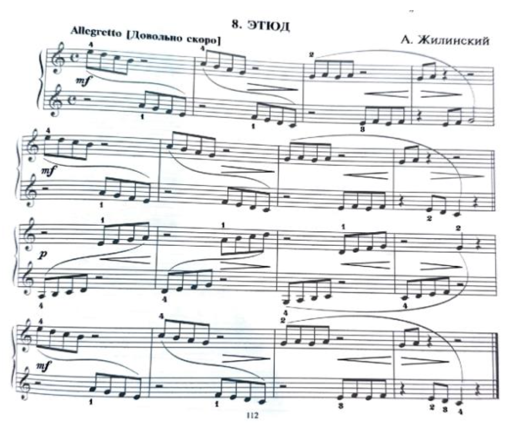

As the ultimate goal of piano lessons is to enable students to express their musical understanding through secure technique, SJMTA holds an annual technique competition aimed at enhancing, developing and mastering piano technique.
Place: Yale Performance Arts Center
Time: 12pm – 5:30 pm. Exact performance times to be announced.
Competition Schedule: Students will be provided with their exact performance time in advance of the competition. All participants should be on the premises at least 15 minutes prior to start time. When all scores have been calculated, the results will be emailed to the participating teachers. Certificates and trophies will be given to teachers at a later date.
Required Repertoire:
There will be 11 levels of competition, from Elementary through Collegiate. For each level required scales and arpeggios are listed on the website with the required etude.
Theory test:
SJMTA is supplementing the Technique Competition with an optional theory test based on Keith Snell’s Fundamentals of Piano Theory. The test fee is included in the $30 fee for the Technique Competition, and it can be taken while students are waiting to perform. This year SJMTA is offering preparatory level through level five. We recommend enrolling students one grade level below the theory level at which they are currently working. Students may also take the theory test only, without participating in the Technique Competition for a fee of $20.
Volunteers:
Four teachers/parents will be needed to monitor the competition. If you cannot volunteer your time, we will require a “duty deposit” of $50 from you to hire extra monitors.
Deadline: January 9, 2026
Application:
Please send the competition and theory test application forms with fees (one teacher’s check paid to SJMTA for all students) to:
Veda Zuponcic
111 Munn Lane,
Cherry Hill, NJ 08034.
For any inquiries or questions please email
Veda Zuponcic@rowan.edu

Zhilinsky, Etude in C Major